SiliconCodesign这篇是面向AI数据中心的高带宽光互连长文。它的切入点是：瓶颈已经从「算得多快」变成「在封装、板、机架、集群之间把数据搬得多快」。全文把短距光通信第一性原理拆到底：光怎么来、怎么调、怎么传、怎么收，以及为什么把IM-DD往上推到224G+ 这么难。
篇幅说明：原文前半（IM-DD系统详解，本编译主体）公开可读；后半详解CPO / 硅光 / 外调制 / 相干四大趋势的部分在付费墙后，未收录。本文以IM-DD的完整链路为主。
算力加速之后，真正的瓶颈转移到数据移动：要在封装、板、机架、集群之间把数据搬得足够快，光互连因此成为AI数据中心最热市场之一。过去几年大量公司与初创给出方案。
作者想回到第一性原理：把高速光通信的数据率做上去，真正的难点在哪？答案要从最主流的短距方案IM-DD的每一环去找。
短距光互连的现役主力是IM-DD：把信息编码在光强里（0/1或PAM4多电平），接收端用直接检测恢复。强度调制有两种实现：直接调制（电信号直接开关激光器电流）或外调制（驱动一个连续发光的稳态光载波）。
IM-DD通常装进可插拔光收发模块，离芯片很远。模块把电域(client)数据转成光域(line)：内含Serdes+DSP（串并转换+均衡）、EIC电芯片（驱动/混合信号调理）、PIC光子集成（硅光/VCSEL光学电路）。
模块成熟且吞吐逐年涨；但AI的224Gbps+ 让模块与「host芯片到光引擎」这一段电信号完整性都得重新做。IM-DD系统整体框图如下。
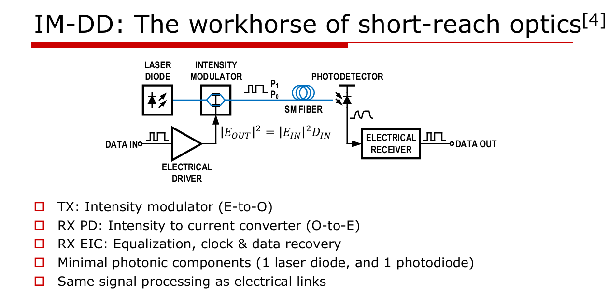
发送端靠激光器把电变成光。激光由大泵浦电流激发受激辐射：接近带隙的光子与电子-空穴对作用产生更多相同光子，在激活区形成光增益；两侧两面镜子（一面全反一面半透）约束光路径。泵浦电流高到光增益超过损耗时振荡，再由腔结构或波长选择光栅锁定模式。
DFB激光器用周期性布拉格光栅提供波长选择性反馈，锁定窄激射波长。而数据中心短距更常见VCSEL：垂直腔面发射激光器：在圆形截面上垂直发光：激活区多层量子阱增强增益，上下叠折射率交替的DBR反射镜，氧化物做电流限制，外延生长在基板上。VCSEL剖面如下。
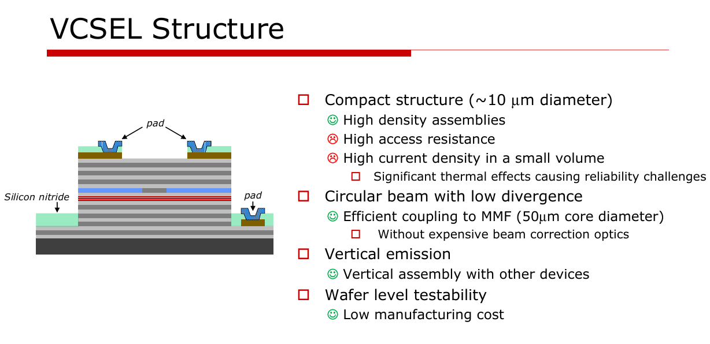
VCSEL的P-I曲线近乎线性二极管：超过阈值电流才开始激射，之后在实用工作区Pout随Iin近线性升高，需直流偏置把它送到线性区。
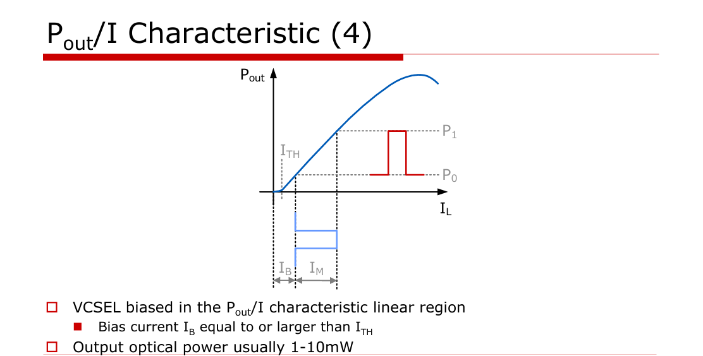
一个直接影响接收余量的是消光比（P1/P0之比）：越高接收端辨BER裕度越大，但需更高驱动电流与功耗：这是第一个贯穿全链路的权衡。材料则决定波段：850nm的GaAs VCSEL主打短距多模；1310/1550nm的InP基激光器/调制器用于单模、长距或电信/数通波段。
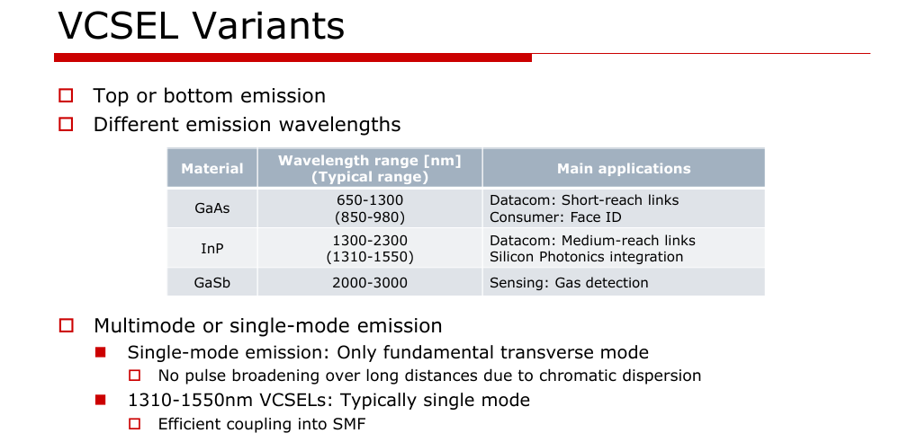
从光谱与材料体系看，芯片到底能落到哪一个短距还是长距区间，往往在选激光器材料那一刻就已定下大半。
VCSEL在短距受欢迎是因为低成本可制造（片内多路可测）加可扩阵列：同一芯片驱动几十条光lane，是它相比单点激光器的扩展性王牌。
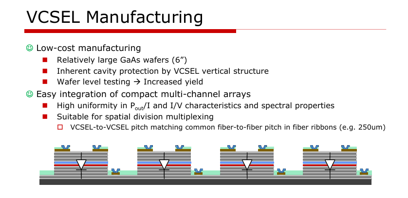
软肋也在信号质量：可靠性：氧化物限制 + 高电流下拉低MTTF；还有开启延迟（加时延）、抖动（模糊边沿、劣化BER）、弛豫振荡（开启欠阻尼）等开关非理想性。根上的权衡仍是带宽vs可靠性：电流密度高带宽高，但故障时间缩短。
落地到电路，驱动VCSEL用差分/伪差分等把电压转成电流的结构；需要的驱动电流越大，输出电容越大、驱动越慢。
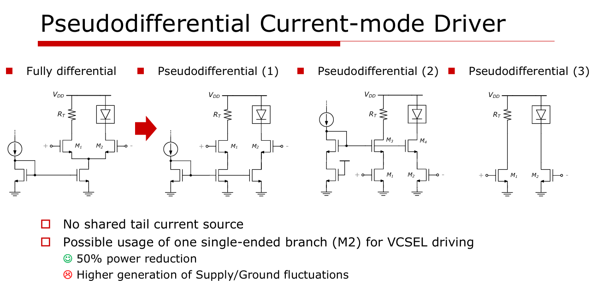
最直白的分层是多模与单模。多模芯径大(50–62.5µm)，多条光路并行(OM1–5档)：短距高速便宜，代价是模态色散封顶了距离。
单模芯径小(8–10µm)，只走一个模式：损耗低、无模态色散，代价是激光器更贵、对准安装更复杂。为了迎战更高带宽的「未来裕量」，业界正把短距常用的多模往单模评估迁，成本与集成复杂度因此上升。
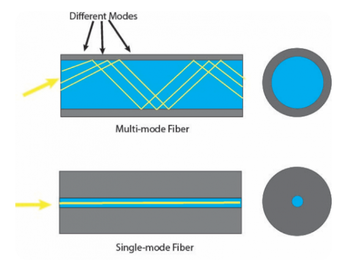
波长对应四个工作窗口：850nm(短距)、O 1310、C 1550，以及把C带再扩展、能让容量翻倍的L带。不同窗亮度不同、伤耗不同，决定了系统能打到多远。
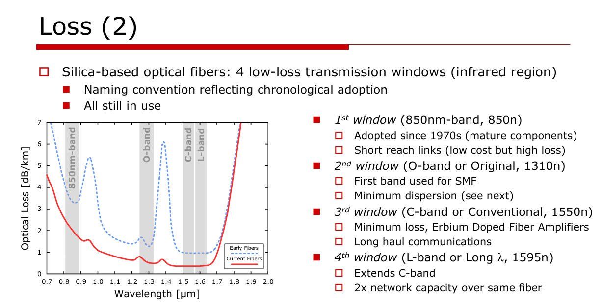
第一个是损耗：来自瑞利散射、玻璃吸收与制造应力等本征源，让光在传播中衰减。工作窗口都相对落在更低损耗的区间，但损耗永远在。
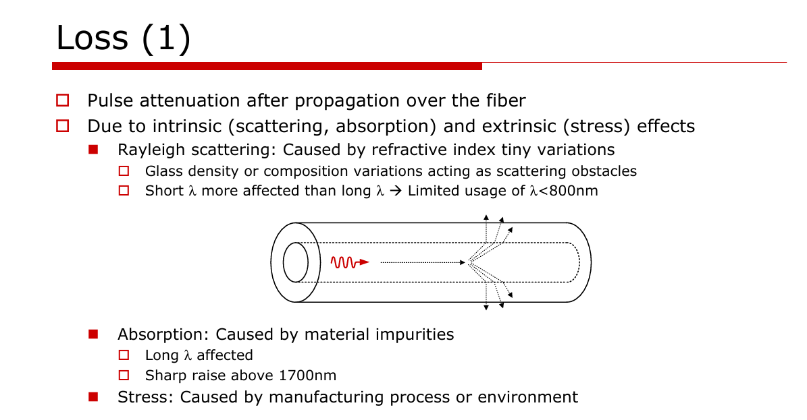
损耗之外是色散(chromatic dispersion)：玻璃折射率随波长变，不同谱分量跑得不一样快，同一个脉冲被越拉越宽：它对高速短距和多模都是先压住带宽的元凶。
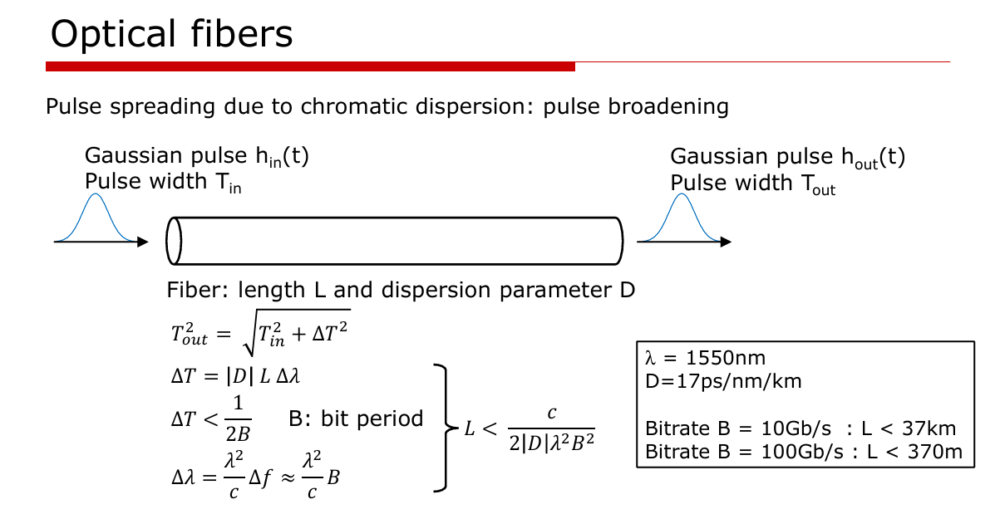
再往下要分开讲多模里更狠的模态色散、以及偏振相关的PMD损伤（下一节）。这里的每一类都是「同一根纤里不同分量到得不一样快」的不同表现。
模态色散专咬多模：不同模式的传播路径与延迟不同，同一脉冲在多条模式里被摊开，且随距离累积：这是多模止步短距的根本原因。
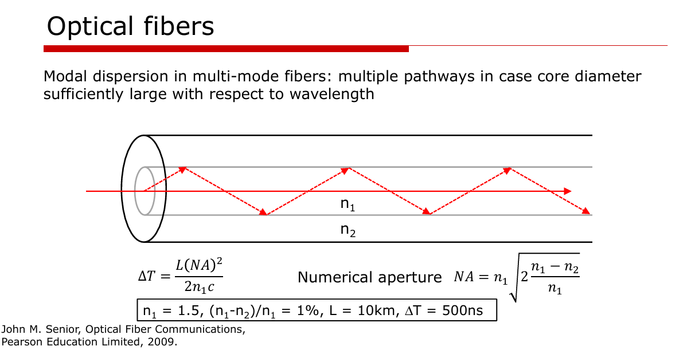
PMD（偏振模色散）则来自纤芯不对称：两个正交偏振分量的传播延迟略有差异，让脉冲再次展宽。它在更高数据率下会从次要项变成必须管理的对象。
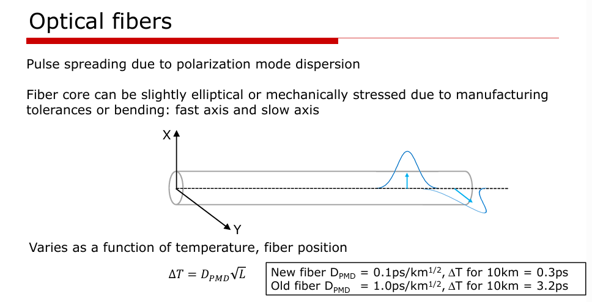
合起来，光纤远距离上线的技术方案好不好，往往先看它对色散、模态色散和PMD的容忍有多少。
接收端是反偏PIN结光电探测器，把检测光转成比例电流，跨阻放大器(TIA)放大成输出电压。关键规格：PIN的响应度/电容/噪声/暗电流；接收Q因子（信号相对总噪声）；BER=½·erfc(Q/√2)：Q越高比特错率越低。消光比高的信号减轻接收负担，但要更高功耗。
直接检测恢复信号的路径如下示意。至此IM-DD的「发光→调制→传→收」主干闭环。
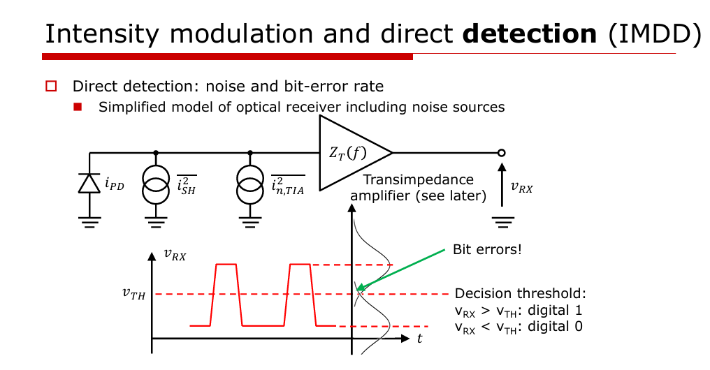
把IM-DD推向更高吞吐，是光学与电学两头同时收窄。光学侧：色散、PMD、非线性与干扰效应。电学侧：更高带宽要付的噪声代价、更紧的抖动/skew/ISI、前端自身带宽上限。
再快的光模块和光纤也没用，如果信号到不了它：不仅光模块要提升，host芯片到光引擎的电互连也在高速搬数据时触到瓶颈。系统所有「卡点」必须随需求一起缩放。
这引出四条上升复杂度的续命路线，正是原文付费墙后的正文主体：共封装光学 (CPO) 把光放进封装；硅光 在硅波导导光并调制；外调制 用连续激光器换更高带宽；相干光 在光域同时调幅+调相。它们分别从集成度、波长、调制带宽与相位维度延续IM-DD到头的那条路。把这个「为什么难」的三条轴（带宽/数据率、可调性、集成）画到一起，就是下面这张架构取舍图。
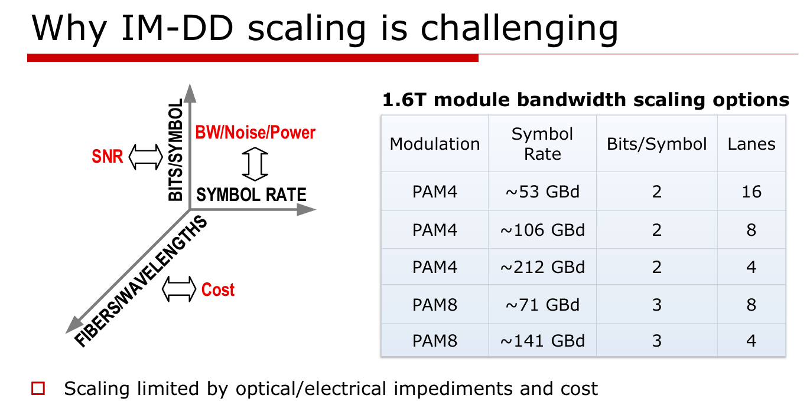
参考：https://www.siliconcodesign.com/p/optical-communications-a-primer